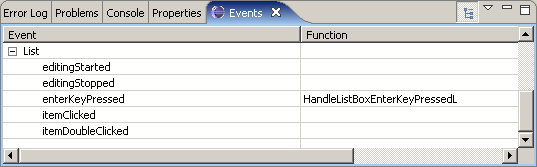

This example shows how to use the Carbide.c++ UI Designer for S60 to define the UI of an application and to implement the "real work" in the generated code.
The goals of the application are to:
Editing generated source to provide application logic
As created, the application would show an empty list box and allow exiting, but not much else. We need to populate the list, handle the items on the Options menu, and bring up the form to add and edit birthdays.
The S60 UI Designer provides the bulk of the source code. We only need to add event handlers and data management code.
In the generated C/C++ sources, commented regions indicate where the designer "owns" code:
/**
* Second-phase constructor for view.
* Initialize contents from resource.
*/
void CBirthdaysListView::ConstructL()
{
// [[[ begin generated region: do not modify [Generated Code]
BaseConstructL( R_BIRTHDAYS_LIST_BIRTHDAYS_LIST_VIEW_2 );
// ]]] end generated region [Generated Code]
}
The "begin generated region" and "end generated region" comments surround code the designer will rewrite on each save. The source generation was designed to allow you to edit code that requires an override of S60 APIs, so you may add lines before the "begin" comment or after the "end" comment as needed. (Hint: if you totally dislike the generated code, you can put "if (0) {" before, and "}" after!)
You may edit anything else in the generated files, including reordering methods and moving sections containing generated code. The only caveats are:
don't edit inside the "generated" comments
don't change the "generated" comments, except perhaps to indent them differently
don't rename generated files, classes, enums, methods, etc.
don't change the hierarchy of generated code (for example, leave methods in their original class; don't move them to a subclass or inner class).
If you violate these constraints, the original code will be replaced on the next save, sometimes with a lot of warnings.
In resources, there are no "generated" comments because the UI Designer can fully reparse RSS. At this time, however, its restrictions are a lot like C++:
don't modify generated fields (they will be replaced on the next save)
don't rename generated files or resources
don't change the hierarchy of resources (for example, moving a resource expression into a standalone resource)
You may, however, add new fields to generated resources and add new resources, #includes, etc. Also, you may modify the contents of generated *.loc / *.lxx / *.rls files. Here, if you edit strings, and they will be propagated back into the design (when it is open). This requires a new save of the design to synchronize the changes.
In the design, the list is empty and shows "No data". At runtime, however, it will be populated dynamically by reading entries from disk and adding entries interactively.
In S60, a list box owns a list box model, which provides the content. This list box model is populated with one string per row, with fields separated by tabs. The list box style directly determines the format of this string. Typically, if you scan top to bottom, then left to right, this spells out the fields. In our "Double Large" style, the fields are (1) icon index, (2) top-right text, and (3) bottom-right text.
The UI Designer creates utility functions for list item formatting based on the current style. See "CBirthdaysList::CreateListBoxItemL()" for populating a TBuf<> with the items making up a row, and "CBirthdaysList::AddListBoxItemL()" for adding that string as an item to the list box.
Side note: "CBirthdaysList::AddResourceArrayItemL()" combines these two for the purpose of creating list box items from an ARRAY resource (where each element is one field of the item, excluding any image index, which is specified at runtime as the final argument). This is used when List Items are added at design time.
The left-hand column shows an icon, which is a gift box, and changes to a gift box with an exclamation mark when a person's birthday is within a week. (Have you bought a present?)
In S60, images are added to a list in an indirect fashion. A list box has an array of icons associated with it, and list items refer to these icons by index. For instance, if the first field of an item is the image, and the second image in the icon array is used, the text for the item may read "1\tName\tDate" (images being indexed starting at 0).
When constructing a list box with prepopulated items, images are specified by editing the "image" property of a list item. For dynamically-added list items, you may specify additional images in the list box's "additional images" array. The UI Designer automatically sets up the list box's icon array for you and provides an enumerator for accessing each image in a TListBoxImages enumeration in the list box container class. You may use these enumerators, for instance, in the "CBirthdaysList::CreateListBoxItemL()" call to specify the image index.
If this is still insufficient for your needs, you may edit the generated SetupListBoxIconsL() method and add more images to the end, after the generated code section. The indices for these images would start from E<listbox>FirstUserImageIndex.
The list box as defined in S60 contains a "listbox model" which is the array of tab-delimited strings defining the cells in a list item (as described in "Creating List Items"). This model reflects the contents of the birthdays list, which is an array of TBirthday managed by the CBirthdaysDocument class. The listbox model is synchronized with the birthdays document whenever a user action constitutes a change. This requires explicit synchronization in this application. A more advanced program would probably add a listener model to the CBirthdaysDocument class so the list could react to changes it hasn't caused itself.
An important limitation of this program is that the indices are identical between the CBirthdaysDocument and the listbox model. There is no separation here, so when elements are added, removed, or edited in the listbox, we use the same index for two different models. If you were to add sorting to the list, for instance, you would need to sort the CBirthdaysDocument model too.
The list box is pretty much inert without handling events. We add events both to the Options menu and to the List box. The "Events" view shows, for the currently selected item(s), the available events and which ones have handlers. (Use the context menu item "Show Events View" if you don't see this view.)

Figure 1 - Events view properties
The Options menu contains the primary commands for manipulating the list. For each menu item, we use the context menu's "Handle 'selected' event" to establish a handler for the menu item. (Once an event is bound, this command changes to "Go to 'selected' handler code".)
Note: this context menu shortcut is used for the one most common event on the selected object, if any; you will usually find more in the Events view.
We set up events for the items in the Options menu. When binding an event, the handler function is named after the menu item (which itself is named after the initial text you enter). If you want to change the function, type a new name in the "Function" column of the Events view. Note that doing this merely adds a new empty function with the given name; any existing function will not be renamed.
Add:
The "selected" event handler attached to this item ("CBirthdaysListView::HandleAddMenuItemSelectedL()") invokes the Edit Birthday form (see below).
Edit:
The "selected" event handler attached to this item ("CBirthdaysListView::HandleEditMenuItemSelectedL()") invokes the Edit Birthday form (see below).
Mark/unmark:
The items in this menu are automatically handled as part of a markable list. If the menu were used elsewhere, you would need explicit handler code for the EAknCmdMark, EAknCmdUnmark, EAknMarkAll, and EAknUnmarkAll commands.
Delete:
The "selected" event handler attached to this item ("CBirthdaysListView::HandleDeleteMenuItemSelectedL()") invokes the confirmation query asking the user to confirm such a terrible idea. The method "CBirthdaysListView::RunRemoveConfQueryL()" is automatically generated for this purpose. You may override the prompt text, if needed (e.g. to show a detailed report about how many birthdays will be lost).
If the user agrees, the items are deleted from the list. A static method is provided in the generated list box container for this purpose ("CBirthdaysList::DeleteSelectedListBoxItemsL()"), which handles the intricacies of deleting multiple items in a list.
The Avkon view's "deactivated" event is bound to a function "CBirthdaysListView::HandleBirthdaysListViewDeactivated()" that saves the birthdays document. (The document is also saved after every edit.)
The list box's "enterKeyPressed" event is bound to a function "CBirthdaysList::HandleListBoxEnterKeyPressedL()" that edits the current birthday, just like the "Options / Edit" menu item.
When birthdays are deleted, we use the "CBirthdaysList::GetSelectedListBoxItemsLC()" routine to get the list of indices from the markable list, in ascending order. This routine returns NULL for empty lists, since Symbian OS abhors a vacuum.
To delete from the CArrays that underlie the birthday model and the list box model, you must delete in the reverse order (or else all the indices will be changing while you're deleting them). "CBirthdayList::DeleteBirthdaysL()" deletes both from the model and then from the list box using the generated "CBirthdayList::DeleteSelectedListBoxItemsL()" method. (Remember again that in this application we maintain an identical ordering of items for these two arrays, so the same indices can be used when deleting from both arrays.)
We want the form to work with the current birthday. When a new birthday is added, however, we want to see the designer-specified default values in the form rather than empty strings.
We add a method "CBirthdayForm::SetBirthday(TBirthday*, TBool)" to set a reference to the birthday it is operating on, with the final parameter indicating whether the birthday is empty or not. This controls whether the form is initially populated from the birthday or from the designer default values.
The UI Designer provides a "CBirthdayForm::LoadFromDataL()" method which initializes the form editors upon construction. Here, we read the birthday's data and update the editors, if needed. The standard "CAknForm::SaveFormDataL()" method is used to save changed data. We edit this method to write editor values back to the birthday.
We add the "CBirthdayForm::IsBirthdayChanged()" method is used to detect whether the user made and saved any changes to the current birthday. The return value from "CBirthdayForm::RunLD()" is not sufficient to detect whether changes were made, since this value reflects the softkey used to exit the dialog, and is always 0, since the user must use Back to do this.